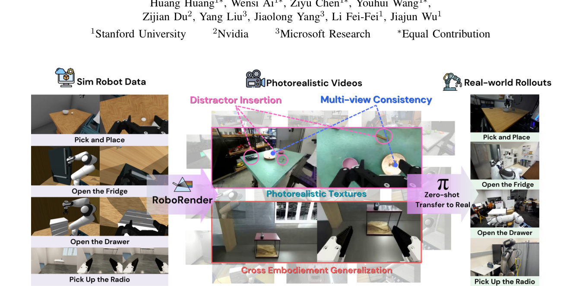
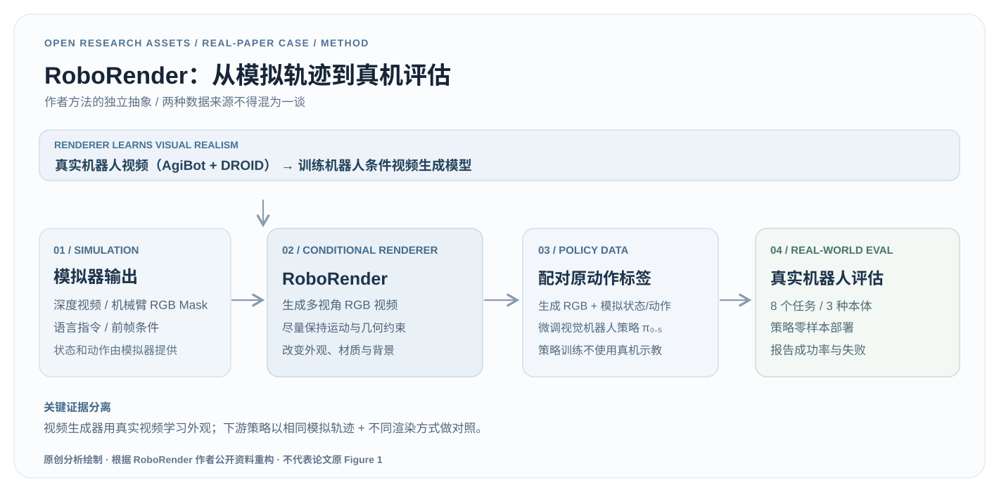
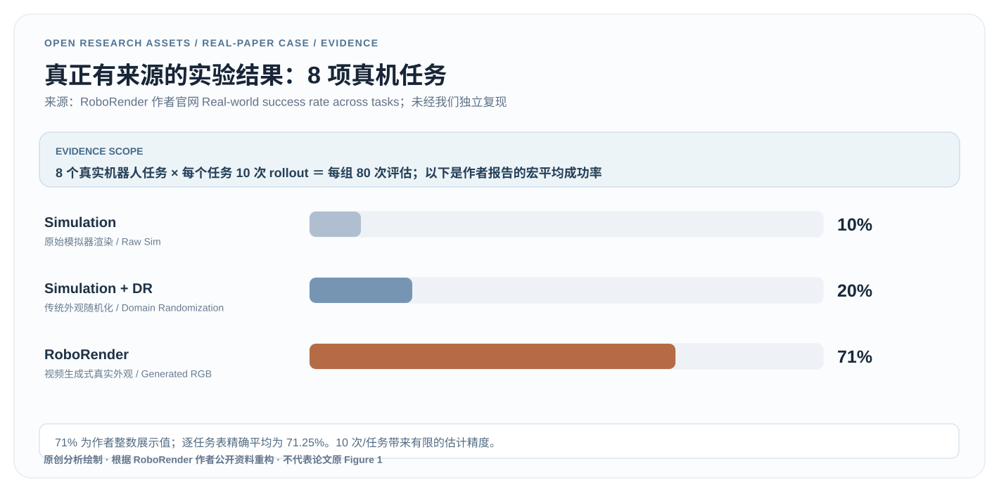

主张应能回到实验
首页的 71% 需要指向 8 项任务结果表，而不是只做宣传性大数字。
REAL RESEARCH / VERIFIED SOURCE / EDITORIAL CASE 01
不是重新绘制一张好看的论文图，而是沿着“方法如何成立 → 实验到底证明了什么 → 如何诚实展示”逐项追溯研究证据。
数据均来自作者公开报告，非我们的独立复现；本页的两张蓝灰色 SVG 是独立绘制的解释性分析图，不是论文 Figure 1。原始论文图片版权归原作者。
01 / ORIGINAL EVIDENCE

原论文 Figure 1 · 本站收录的已核实、带来源归属的评论缩略图；未授权为我们的原创资产。
模拟策略已有动作标签与状态轨迹，但原始 RGB 外观与真实环境存在差距。研究尝试让视频生成模型改变视觉外观，同时仍利用模拟器提供的动作标签训练策略。
视频生成器本身用 DROID 和 AgiBot 的真实视频学习外观；下游策略则在模拟轨迹的生成视频上微调，最后零样本部署真机。前者用真实数据，后者不做真机策略微调。
02 / METHOD RECONSTRUCTION
用原创可编辑 SVG 分开表达“视频生成器的真实训练数据”和“策略学习所依赖的模拟轨迹”。箭头只表示方法信息流。

画方法图时先标明每组数据的来源、监督信号、冻结/训练模块和部署边界，再决定布局与配色。视觉上靠近的两个模块不一定使用同一份训练数据。
03 / CLAIM → TEST → EVIDENCE
作者对同一批模拟轨迹采用不同视觉渲染方式训练策略，再在 8 项真机任务比较成功率。以下数据逐行来自原作者官网。

| 任务 | 机器人 | Sim | Sim + DR | RoboRender |
|---|---|---|---|---|
| 杯子拾放 | Droid | 40% | 60% | 80% |
| 碗拾放 | Droid | 30% | 20% | 80% |
| 苹果拾放 | Droid | 10% | 20% | 60% |
| 鸡蛋拾放 | Droid | 0% | 30% | 50% |
| 打开冰箱 | Droid | 0% | 0% | 70% |
| 打开抽屉 | Droid | 0% | 0% | 90% |
| 拿起收音机 | R1Pro | 0% | 30% | 70% |
| 放置绿色记号笔 | Yam | 0% | 0% | 70% |
| 作者展示的平均值 | 8 × 10 | 10% | 20% | 71% |
在作者报告的这 8 项任务、每项 10 次 rollout 的评估中，RoboRender 组的平均成功率高于原始模拟器渲染组与传统 DR 组。
还不能直接断言所有机器人任务的泛化效果、精确置信区间、跨实验室可靠性或已完成独立复现。我们没有真实 rollout 级日志，也没有复训模型。
04 / RESEARCH COMMUNICATION
我们观察论文官方站点将研究主张、Method、训练数据、生成质量与真机评估分开呈现；学习的是“读者如何沿证据路径导航”，不是复制第三方网站源码和素材。
首页的 71% 需要指向 8 项任务结果表，而不是只做宣传性大数字。
方法图说明生成条件和控制流，结果表才说明实验效果；两者不要互相冒充。
Paper、Code、模型入口分别链接官方实际资源；提供代码不等于所有训练材料已经开源。
05 / REUSE CHECKLIST